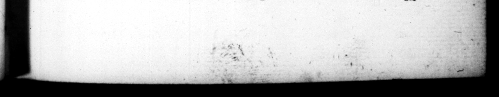

: TIB, NERO CESAR. 147 vinciarum preſides ullos mutaverit: Hiſpaniam & Syriam per aliquot annos ſine conſularibus legatis hahuerit: Armeniam à Parthis occupari, Moefiam à Dacis Sarma_ Gallias 3 Germanis kept Spain and Syria for ſeveral years without any conſular licvetenants , and Suffered Armenia to be ſeized by theP aythians, Mes by the Dacians and ' Sarmatians, and Gaul to be ravaged by the Germans, to the great diſgrace and hazard of the empire. ari neglexerit: magno dedecare imperii, nec minort diſcrimine., 42. Cæterum ſecreti Iicenti · am nactus & quaſi civitatis oculis remotus, cuncta ſimul vitia male diu diſſimulata, tandem profudic : de quibus ſigillatim ab exordio referam. In caſtris tiro etiam tum, propter nimiam vini aviditatem, pro Tiberio, Biberius ; pro Claudio, caldius ; — Nerone, Nero vocabatur · Poſtea princeps in ipſa publicorum morum correctione cum Pomponio Flacco & L. Piſone noctem continuumque biduum epulando potandoque conſumpſit : quorum alteri Syriam provinciam, alteri præfecturam urbis confeſtim detulit, codicillis quoque jucundiſſi. mos & immum horarum amicos profeſſus. Seſtio Gallo libidinoſo, ac prodigo ſeni, olim ab Auguſto ignominia nota to, & à ie ante pancos Utes apud Senatum increpito, cœnam ea lege condixit, ne quid ex conſuetudine immutaret aut demeret utque uudis puellis miniſtrantibus ctnaretur, Ignotiſſimum quæ ſture candidatum noliliftimis ancepolnic, ob epotam in convivio, propinante ſe, vini amphoram, Afellio Sabino H.S. ducenta donavir pro dialogo, in quo boleti, & ficedulæ, & oſtreæ, & turd certa men induxerat. Novum denique officium inſtituit a voluptatibus, præpoſito equite Rom. T. Cæſonio Priſco. 42. Bur having now the aduant age of privacy, and being quite withdraun from under the eye and obſervation of the city, he gave a looſe to all the uicious inclinations, which he had ſmothered but very indifferently before e of which I ſhall here give a particular account in order. Whilſt War 4 young ſoldier in the camp, he was for his exceſſive inclination to wine, for Tiberius, ca#'d Biberius ; for Claudius, Caldius ; and for Nero, Mero. And afier be came to the empire, and had upon him the charge of reſormi the publick manners, he ſpent a while night and two days tog et her in feaſtmg and drinking with Pomponius Flaccus, and Lucius Piſo; to ore of which he gave the province of Syria, and to the other th: fræ fectureſbip of the city immediately upon it; declaring them in his patents, very pleaſanc companions, and always agreeable, He made an arprintment to ſup with Seftins G illus a lemi jprodigal old je'low, that hai been diſgraced by Auguſzu, and — ty himſelf but 4 few days before in the ſenate-houfe x upon condition that he ſh:uld not recede at all from his uſual met bod of entertainment, and that they be attended at table by naked | He preferred a ry c:ſcure candidate for. the queſtorſhip, before the moſt noble compericers, only for taking off in pleaging him at table, an amprora of wing at a draught. H: prejented Aſellius S abinus with two hundred thouſand ſcſterces, for writing a dialogue, in thew ay of diſpute, betwixt the Muſhroom and the fig-pecker, the oyſter and the thryſh. He likewiſe inſtituted a new office fr the adyancement of his pleaſures, into which be tut Titus Ceſouius Priſcus a Roman knight, "S 43. Seczſln vero Capreenſi. etlam ſellariam excogitavit ſedem arcanarum libidinum: 43. In his receſs at Capree, Ie cen tri ved an —_— for the practice of ons e lewanef; ; where be 41 2 in
